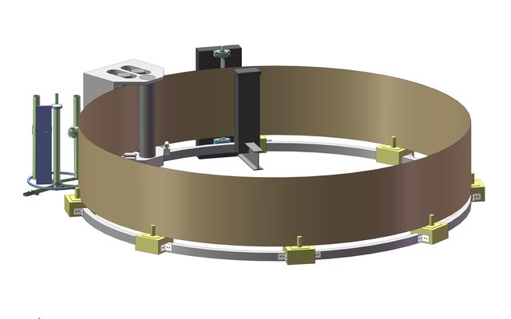
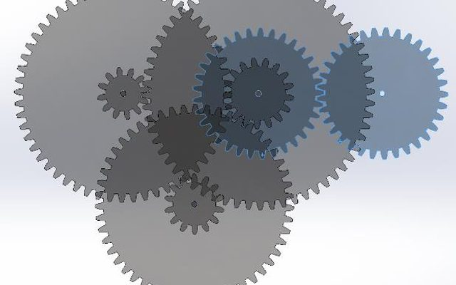
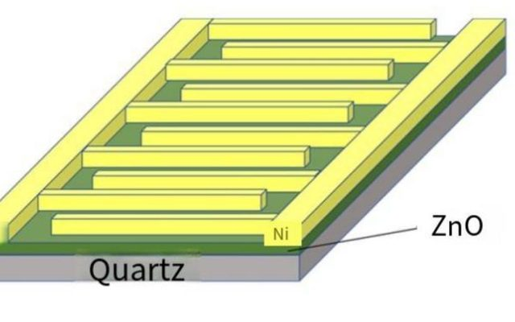
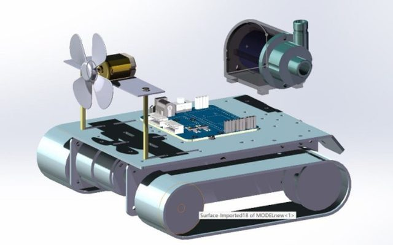
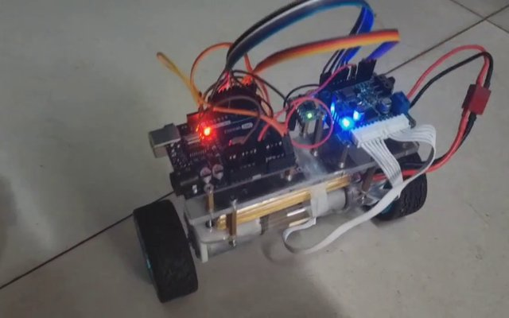
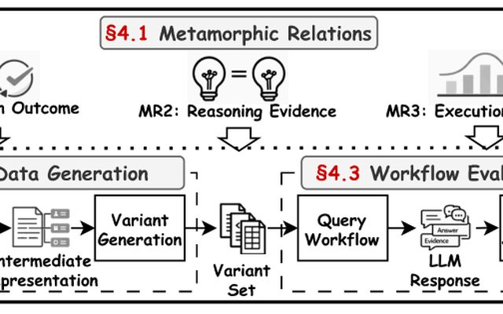
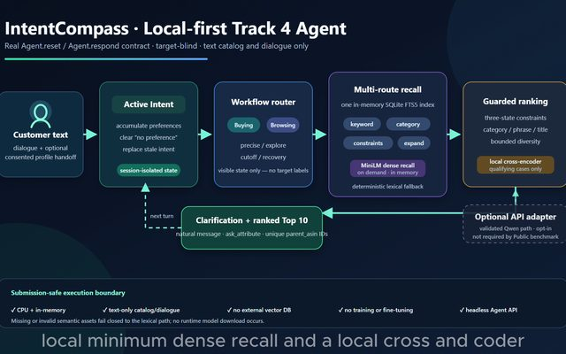
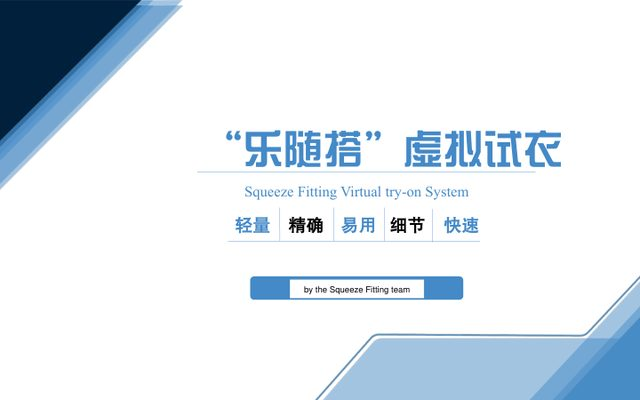
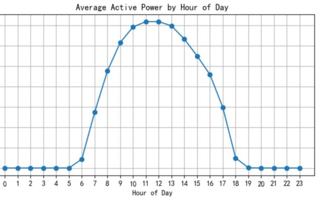
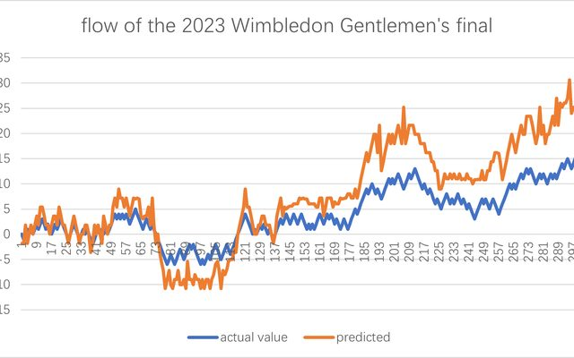

Mechanical Engineering · Semiconductor · AI Testing机械工程 · 半导体 · AI 测试
Xianyun Cheng
MSc Mechanical Engineering · National University of Singapore新加坡国立大学 · 机械工程硕士（2027 届）
I am an MSc student in Mechanical Engineering at NUS with a First Class Honours BEng. My background covers mechanical design and FEA simulation (SolidWorks, ANSYS), semiconductor process and test-data analysis, and research on LLM testing and reliability with Dr. Tianlin Li (Beihang University) and Dr. Xiaoyu Zhang (NTU), including a co-authored ASE 2026 paper.
新加坡国立大学机械工程硕士在读，本科为中南大学与英国邓迪大学双学位（邓迪一等荣誉学位）。具备机械结构设计与有限元仿真（SolidWorks、ANSYS）、半导体工艺与测试数据分析的工程背景，并在北航 Tianlin Li 老师、NTU Xiaoyu Zhang 老师课题组从事 大模型测试与可靠性 研究，以第二作者在 ASE 2026（CCF-A）发表论文。
🟢 Open to internships (available from 27 Nov 2026) and full-time roles (2027 graduate)🟢 正在寻找实习（2026 年 11 月 27 日起可到岗）与 2027 届全职岗位
- ASE 2026Co-authored paper (2nd author) at a top software-engineering venue第二作者发表于 CCF-A 软件工程顶会
- First ClassBEng (Hons) Mechanical Engineering, University of Dundee邓迪大学机械工程一等荣誉学士
- 2 internshipsCAICT AI Institute · Jingjia Microelectronics (semiconductor)中国信通院人工智能研究所 · 景嘉微（半导体）
- 11 projectsMechanical design, FEA, micro-fabrication, embedded control, AI机械设计、有限元、微纳加工、嵌入式控制、AI
Projects & Research项目与科研
Click any card for details, reports, papers and videos.点击卡片查看详情、报告、论文和视频。
Engineering工程项目

Structural Design and Mechanical Simulation of Vertical Roll-Bending Equipment for Large-Diameter Thin-Walled Rings
- Target parts: 12 m diameter rings in 304 stainless steel, 4–10 mm thick and 800–2200 mm wide.
- Parametric SolidWorks assembly of the uncoiling, roll-bending and cutting units.
- Strength and stiffness checks: upper-roll (D = 500 mm) deflection 0.24 mm/m; column buckling safety factor 13.7; weld fatigue utilisation 0.70.
- ANSYS static analysis for 4/6/8/10 mm strip: peak stresses 253.6 / 298.9 / 372.4 / 445.8 MPa, all below 520 MPa.
- Explicit transient simulation of the forming process predicted a ring diameter of about 10.84 m (within 10% of target).
大直径薄壁圆环立式卷板成形设备结构设计与力学仿真
- 成形对象：直径 12 m、厚 4–10 mm、宽 800–2200 mm 的 304 不锈钢圆环。
- 用 SolidWorks 完成开卷、卷板、切割等单元的参数化装配设计。
- 强度与刚度校核：上辊（D = 500 mm）挠度 0.24 mm/m；立柱屈曲安全系数 13.7；焊缝疲劳利用率 0.70。
- ANSYS 静力分析：4/6/8/10 mm 板厚下峰值应力分别为 253.6 / 298.9 / 372.4 / 445.8 MPa，均低于 520 MPa。
- 显式瞬态仿真预测成形直径约 10.84 m，与目标偏差小于 10%。

Mechanical Clock Design Project
- Calculated gear tooth counts so the second, minute and hour hands keep exact 1/60 and 1/12 ratios, with as few shafts as possible.
- Built and checked the assembly in SolidWorks, exported part profiles to AutoCAD (DXF) and laser-cut them from acrylic.
- Graham escapement with a gravity drive to regulate time.
- Testing: the gear train turned as designed; an escapement design error kept the clock from running, which the report analyses as the main lesson.
机械钟设计制造项目
- 计算各级齿轮齿数，使秒针、分针、时针保持 1/60、1/12 的精确传动比，并尽量减少传动轴数量。
- 在 SolidWorks 中完成装配验证，将零件轮廓导出为 DXF 在 AutoCAD 中出图，用亚克力板激光切割。
- 采用格拉汉姆擒纵机构与重力驱动控制走时。
- 测试结果：齿轮系按设计正常传动；擒纵机构存在设计误差导致整钟无法持续走时，报告对此做了原因分析与改进总结。

Design and Process Optimisation of a Ni/n-ZnO/Ni UV Photodetector
- Deposited ZnO films by RF magnetron sputtering; patterned interdigitated Ni electrodes with MA6 UV lithography and lift-off.
- Measured I–V and spectral responsivity; the cutoff wavelength (~440 nm) exceeded the theoretical value.
- Traced the drift to defect states in the polycrystalline film and proposed process improvements.
紫外光电探测器设计与工艺优化（Ni/n-ZnO/Ni）
- RF 磁控溅射制备 ZnO 薄膜，MA6 紫外光刻与剥离工艺制作叉指 Ni 电极。
- 完成 I–V 与光谱响应测试，截止波长约 440 nm，超出理论值。
- 将偏移归因于多晶薄膜缺陷态，并提出工艺改进方向。

Intelligent Firefighting Vehicle
- Designed the chassis, tracks and extinguishing module in SolidWorks; checked key parts in ANSYS Workbench.
- Designed a PCB integrating 6 functional modules.
- Implemented PWM speed control, steering, sensor interrupts and fan/pump drive on Mbed.
- Integrated and validated Bluetooth remote driving, flame detection and extinguishing on the prototype.
智能消防车
- SolidWorks 设计底盘、履带与灭火模块，ANSYS Workbench 校核关键零件。
- 设计集成 6 个功能模块的 PCB。
- 基于 Mbed 实现 PWM 调速、方向控制、传感器中断和风扇水泵驱动。
- 完成蓝牙遥控行驶、火焰检测与灭火功能的样机联调与验证。

Two-Wheeled Self-Balancing Car
- Built a two-wheeled self-balancing car on an Arduino-based controller.
- Tuned the PID control loop so the car stays upright on its own.
- Demo: the car is pushed by hand and recovers its balance.
两轮自平衡小车
- 基于 Arduino 控制板搭建两轮自平衡小车。
- 调试 PID 控制回路，使小车能自主保持直立。
- 演示视频：用手推动小车后，它能自行恢复平衡。
AI & DataAI 与数据

Not as Sweet by Another Name: An Empirical Study of Format Robustness in LLM Document Workflows
- Question: does changing only the file format of the same document change an LLM's decision in medical, financial and other high-stakes tasks?
- 3 metamorphic relations across 4 LLM workflows × 4 real tasks × 4 document formats: 48,000 executions.
- Format changes cut accuracy by up to 53.63% and flipped decisions in over 41% of cases.
- My part: the lightweight test wrapper and automated experiment pipeline, Jensen–Shannon divergence analysis, and the Vote Aggregation and Format Routing mitigations (up to 44.21% fewer violations).
- A patent application for the method is in preparation.
Not as Sweet by Another Name: An Empirical Study of Format Robustness in LLM Document Workflows
- 研究问题：在医疗、金融等高风险决策场景中，同一份文档只换文件格式，大模型的判断会不会变？
- 设计 3 条蜕变关系，覆盖 4 个 LLM 工作流 × 4 类真实任务 × 4 种文档格式，共 48,000 次执行。
- 结果：仅改变格式，准确率最高下降 53.63%，超过 41% 的样本决策发生漂移。
- 本人负责：轻量级测试包装器与自动化实验管线、Jensen–Shannon divergence 偏移量化，以及投票聚合、格式路由两种缓解策略（违反率最高降低 44.21%）。
- 相关方法正在申请发明专利。
LLM-Based Automated Game Evaluation
- Integrated open-source game-playing agents into a testing framework that records screenshots, actions and gameplay traces.
- Built review datasets across 9 game genres and 2 reviewer types, with structured extraction of evaluation aspects.
- Compared persona-conditioned LLM evaluators against real player feedback, including how they react to gameplay changes.
Two papers from this work are under double-blind review, so they are not linked here.
基于大模型的游戏自动评测
- 整合开源游玩智能体搭建测试框架，记录截图、动作与游玩轨迹。
- 构建覆盖 9 类游戏、2 类评论者的评论数据集，并做结构化评价维度抽取。
- 对比基于角色设定的大模型评价者与真实玩家反馈，包括对游戏机制改动的反应。
相关两篇论文处于双盲评审中，暂不公开链接。

IntentCompass: Multi-Turn Conversational Product Search Agent
- Evaluated intent routing, attribute constraints, context carry-over and dynamic clarification over a ~50,000-item catalogue.
- Ran Windows reproducibility checks and analysed retrieval deviations and edge-case failures.
IntentCompass：多轮对话式商品搜索智能体
- 面向约 5 万件商品目录，评测意图路由、属性约束、上下文继承与动态澄清等环节。
- 负责 Windows 环境复现与失败案例分析，定位检索偏差与边界问题。

Lightweight Virtual Try-On System
- Pose estimation and garment alignment with MoveNet + MobileNetV2 + FPN.
- Slimmed CP-VTON+ with depthwise-separable convolutions.
- Deployed on CPU with OpenVINO; whole system under 50 MB.
轻量化虚拟试衣系统
- 基于 MoveNet + MobileNetV2 + FPN 的姿态估计与服装对齐。
- 使用深度可分离卷积对 CP-VTON+ 做轻量化。
- OpenVINO CPU 部署，整个系统小于 50 MB。

Data-Driven Photovoltaic Power Forecasting
- Cleaned the data, extracted time features and quantified how irradiance, temperature, wind and other factors affect output.
- Compared linear regression, decision tree, random forest and SVM, evaluated with MSE, RMSE, MAE and R².
- Analysed robustness under extreme weather and the sources of prediction error.
数据驱动的光伏发电功率预测
- 完成数据清洗与时间特征提取，定量分析辐照、温度、风速等因素对发电功率的影响。
- 对比线性回归、决策树、随机森林、SVM 等模型，用 MSE、RMSE、MAE、R² 评价。
- 分析极端天气下的稳健性与预测误差来源。

Catch the Flow of a Match with Improved LSTM
- Ranked match attributes with a random forest, then built psychological-stress and physical-stamina models from the selected indicators.
- Predicted momentum shifts in the 2023 Wimbledon matches with an improved LSTM.
Catch the Flow of a Match with Improved LSTM
- 用随机森林筛选关键比赛属性，并据此建立心理压力与体能消耗量化模型。
- 用改进 LSTM 预测 2023 温网比赛中的势头变化。
Experience实习与经历
Studied high-quality dataset development in Ningbo and data-annotation practice in Shenyang; prepared agendas and reviewed materials for the WG2/WG5 joint meetings and the Fangsheng Intelligent Testing Seminar.围绕宁波高质量数据集建设与沈阳数据标注实践开展专题调研；参与 WG2/WG5 联合会议与“方升”智测研讨会筹备，负责议程准备与会议材料审阅。
Process analysis, product testing and engineering-data processing for semiconductor manufacturing; training on the packaging lab and production line (back-end manufacturing, integrated test, quality control).参与半导体制造相关的工艺分析、产品测试与工程数据处理，辅助定位潜在工艺异常；参加封装实验室及产线流程培训，理解后道制造、集成测试与质量控制的关系。
LLM testing and format robustness; ASE 2026 paper (see Projects).大模型测试与格式鲁棒性研究，ASE 2026 论文（见项目）。
LLM-based automated game evaluation and testing frameworks.基于大模型的游戏自动评测与测试框架。
Presenter logistics, on-site interpretation and opening-ceremony hosting, Changsha.负责报告人后勤协调、现场翻译与开幕式主持（长沙）。 Certificate证书
Wrote and edited 20+ articles for the official account; organised Photoshop workshops.撰写编辑 20+ 篇公众号文章，组织 Photoshop 工作坊。
Education & Honours教育与荣誉
MSc Mechanical Engineering (expected Aug 2027)机械工程硕士（预计 2027 年 8 月毕业）
BEng (Hons) Mechanical Engineering, First Class Honours机械工程荣誉学士，一等荣誉学位
BEng Mechanical Design, Manufacturing & Automation · GPA 86.33/100机械设计制造及其自动化 工学学士 · GPA 86.33/100
Awards获奖
- First Prize, Gauss Cup Mathematical Modelling League (2024)2024 高斯杯数学建模联赛 一等奖
- Provincial Second Prize, 3rd National College Students' Technology Innovation & Entrepreneurship Competition (2024)2024 第三届全国大学生技术创新创业大赛 省赛二等奖
- Provincial Third Prize, Hunan College Students' Energy-Saving & Emission-Reduction Competition (2023)湖南省大学生节能减排竞赛 省级三等奖（2023）
- Provincial Second Prize, National College English Translation Competition (2024)2024 全国大学生英语翻译大赛 省级二等奖
- Successful Participant, MCM 20242024 美国大学生数学建模竞赛 Successful Participant
- Third-Class Scholarship (2022–2023) and Special Scholarship (2025), Central South University中南大学 2022–2023 学年三等奖学金、院级专项奖学金（2025）
Skills技能
- Mechanical机械设计与仿真
- SolidWorks, AutoCAD, ANSYS Workbench (static, nonlinear, transient)（静力、非线性、瞬态）
- Semiconductor半导体
- RF sputtering, UV lithography, lift-off; process and test-data analysis; packaging & test training磁控溅射、紫外光刻、剥离工艺；工艺与测试数据分析；封装与测试产线培训
- Electronics电子与嵌入式
- PCB design, Mbed, ArduinoPCB 设计、Mbed、Arduino
- Programming & AI编程与 AI
- Python, MATLAB, C++; LLM testing and evaluation pipelines; OpenVINO deploymentPython、MATLAB、C++；大模型测试与评测管线；OpenVINO 部署
- Languages语言
- Mandarin (native); English (IELTS 6.5, CET-6), English-taught BEng and MSc普通话（二级甲等）；英语（IELTS 6.5、CET-6），本科与硕士均为全英文授课